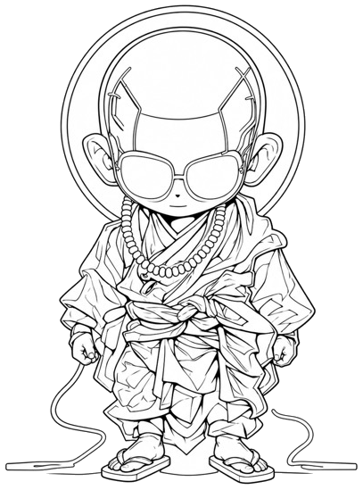

BUSHIDO 2.0
義とは、為すべきことを為すこと。
Righteousness is found in doing what must be done.
知識も技術も、今は誰でも手に入る。だからこそ、どんな価値観で動くかが問われる。 BushiDAO は、武士道をいまの生活の哲学として扱う道場です。Web3 は道具。目的は人が集まり、動き、何かを残すこと。

道場であること
A dojo
柔道も茶道も、技の先に人格がある。武士道も同じで、七つの徳は過去の飾りではない。 刀や身分ではなく、スキルと貢献と、残る記録。主君への忠義ではなく、この場への自発。名誉ある死ではなく、義ある行いの記録。
理念が武士道。記録がブロックチェーン。実践の場が DAO。誰でも入れる。ゼロからでいい。師も学ぶ。
- 義為すべきことを為すdo what must be done
- 勇問う、試すask, try
- 仁人を助けるhelp people
- 礼丁寧に返すanswer with care
- 誠嘘をつかないno pose
- 名行いで名を残すname from deeds
- 忠場への自発vow to the field
白書
Whitepaper
なぜこの道場があるか。長く書いたものが白書です。
はじめ方
How to start
- Discord の道場に来る。コミュニティは日本語。
- Come to the Discord dojo. Community voice is Japanese.
- 話してみる。質問でいい。面白そう、で入口に立っている。
- Talk. A question is enough. If it feels interesting, you are already at the door.
- 残したい人はウォレットを一つつなぐ。検定、武鑑、助太刀はそれから。
- If you want a lasting record, link one wallet. Exam, 武鑑, and 助太刀 come after that.
いま動いている場
What is live
武鑑
義の名刺。ウォレットを入れると、ここに残る。
A calling card for Gi. Add a wallet and it stays here.
助太刀
仲間の旗に、JPYC で加勢する場。
Stand with a comrade’s flag, in JPYC.
武士コレBushi Collection
初ロットはまだ。見るだけでもどうぞ。
First lot not open yet. Looking is fine.
108の煩悩Study
Web3 を学ぶ場。投資の助言ではない。
A place to study Web3. Not investment advice.
WEB3検定の合格は武鑑に残る。案内は Discord から。